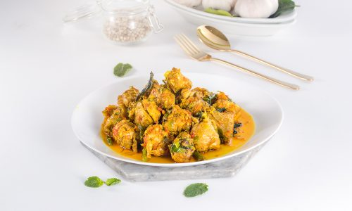

Ayam Palekko

History
Ayam Palekko is a processed duck meat dish that is one of the typical
culinary dishes of South Sulawesi (Sulsel). The dish is said to originate
from Sidrap Regency, but is popularized in Pinrang.
The origin of the nasu palekko food is still a matter of debate. The
naming of the name Nasu Palekko has also given rise to two versions with
different interpretations.
Ingredients
-
600-700 gram chicken thigh meat, cut into bite sizes tamarind juice
(from 1 tablespoon tamarind + 4 tablespoon water, mixed well and
strained)
- 3 tablespoon oil
- 1 lemongrass, bruised and knotted
- 1/2 inch galangal, cut into thin slices and bruised
- 1 tablespoon palm sugar (or coconut sugar/brown sugar)
- 1/2 tablespoon salt
- 1 teaspoon ground pepper
- 3-4 kaffir lime leaves, shredded
- 1/4 cup cilantro leaves, roughly choppeds
-
Spices (100 gram shallot,5 cloves garlic, 3-30 red bird eye chilies,
seeded)
Steps
-
Massage chicken thigh with tamarind juice. Set aside for 10 minutes.
-
Heat oil in a frying pan over medium high heat. Sauté spice paste,
lemongrass, and galangal until fragrant and the spices are cooked. About
3 minutes.
-
Add chicken with all the tamarind marinade to the pan, season with palm
sugar, salt, and pepper. Stir, cook until chicken is fully cooked, and
the sauce is reduced by half.
-
Turn off heat, add kaffir lime leaves and cilantro. Stir to mix evenly,
then transfer to a serving platter and serve immediately.
Back